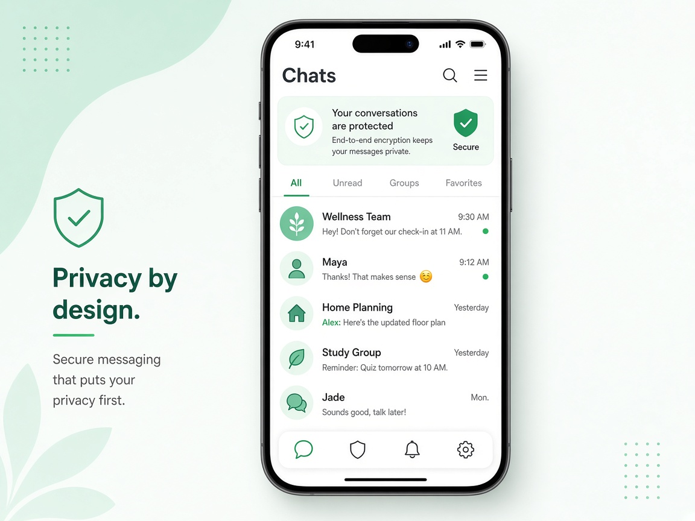

必装
iOS · Android
WhatsApp 官方客户端
唯一应安装的即时通讯本体。改装版、增强版、网盘 APK 都是高风险。

- 官方客户端才会持续获得安全更新、诈骗提示与账户恢复能力。
- 非官方包可能内置后门，端到端加密也救不了「端点已沦陷」。
- 警方与 Meta 反复提醒：只用官方应用商店中的 WhatsApp。
从官方商店安装，并立刻开启两步验证
iPhone：仅从 App Store 搜索 WhatsApp Messenger 安装/更新。
Android：优先 Google Play；部分地区可用手机厂商官方应用商店中的正式版。
安装后立刻开启两步验证，并检查「已关联的设备」。
Note: 不要从群文件、网盘、短链下载所谓 Plus / GB / 防撤回版。